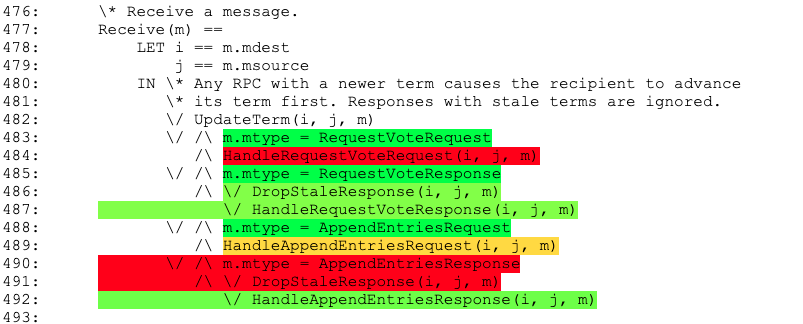

Getting Started
Table of Contents
- Shall I use Apalache or TLC?
- System requirements
- Installation
- An example of a TLA+ specification
- Setting up specification parameters
- Running the tool
- Principles of symbolic model checking with Apalache
- The Apalache module
- Profiling your specification
- Five minutes of theory
- Supported language features
1. Shall I use Apalache or TLC?
We recommend starting with TLC. It is mature, well-documented, and well-integrated into TLA+ Toolbox. Once you have debugged your TLA+ specification, and TLC is still producing too many reachable states, switch to Apalache. We are using this approach at Informal Systems.
2. System requirements
Every commit to master and unstable is built with GitHub actions on MacOS (JDK 1.8.0) and Linux (OpenJDK8). If you would like to run Apalache in Windows, use a docker image. Check the Docker manual and the section on Using a docker image for details.
As Apalache is using Microsoft Z3 as a backend SMT solver, the required memory largely depends on Z3. We recommend to allocate at least 4GB of memory for the tool.
3. Installation
There are three ways to run Apalache:
- Download the latest release and run apalache in JVM,
- Download and run a docker image, or
- Build Apalache from sources and run the compiled package.
If you just want to try the tool, we recommend downloading the release or pulling the docker image. If you would like to run the tool on a daily basis or contribute to the project, we recommend building the project from the source.
3.1. Running in Java Virtual Machine
You have to download and install a Java Virtual Machine first. For instance, OpenJDK should work (we tried Apalache with OpenJDK 11).
Once you have installed Java, download the latest release and unpack into a directory of your choice. Depending on your OS, you have two options.
Option 1: Linux, MacOS. You can run the script ./bin/apalache-mc. It is
that simple.
Option 2: Windows. You have to run Java directly:
-
Check the application name in the directory
mod-distribution\target. It should be calledapalache-pkg-X.Y.Z-RELEASE-full.jar, whereX.Y.Zis the release number, for instance, 0.8.0. -
Run Java as follows:
java.exe -cp mod-distribution\target\apalache-pkg-X.Y.Z-RELEASE-full.jar <args>
The arguments <args> are explained in Running the tool.
If you would like to contribute a command-line script for running Apalache in Windows, please open a pull request.
3.2. Using a docker image
We publish Docker images for every release :sunglasses:
Docker lets you to run Apalache in an isolated container. All dependencies are already installed in docker. However, you have to install docker.
To get the latest Apalache image, issue the command:
docker pull apalache/mc
Running the docker image
To run an Apalache image, issue the command:
$ docker run --rm -v <your-spec-directory>:/var/apalache apalache/mc <args>
The following docker parameters are used:
-
--rmto remove the container on exit -
-v <your-spec-directory>:/var/apalachebind-mounts<your-spec-directory>into/var/apalachein the container. This is necessary for Apalache to access your specification and the modules it extends. From the user perspective, it works as if Apalache was executing in<your-spec-directory>. In particular the tool logs are written in that directory.When using SELinux, you might have to use the modified form of
-voption:-v <your-spec-directory>:/var/apalache:z -
apalache/mcis the APALACHE docker image name. By default, thelateststable version is used; you can also refer to a specific tool version, e.g.,apalache/mc:0.6.0orapalache/mc:unstable -
<args>are the tool arguments as described in Running the tool.
We provide a convenience wrapper for this docker command in
script/run-docker.sh. To run the latest image using the script, execute
$ $APALACHE_HOME/script/run-docker.sh <args>
To specify a different image, set APALACHE_TAG like so:
$ APALACHE_TAG=foo $APALACHE_HOME/script/run-docker.sh <args>
Setting an alias
If you are running Apalache on Linux :penguin: or MacOS :green_apple:, you can define this handy alias in your rc file, which runs Apalache in docker while sharing the working directory:
# using the latest stable
$ alias apalache="docker run --rm -v $(pwd):/var/apalache apalache/mc"
# using the latest unstable
$ alias apalache="docker run --rm -v $(pwd):/var/apalache apalache/mc:unstable"
Using the unstable version of Apalache
The development of Apalache proceeds at a high pace, and we introduce a
substantial number of improvements in the unstable branch before the next stable
release. Please refer to the change
log and
manual
on the unstable branch for the description of the newest features. We
recommend using the unstable version if you want to try all the exciting new
features of Apalache. But be warned: It is called "unstable" for a reason. To
use unstable, just type apalache/mc:unstable instead of apalache/mc
everywhere.
Do not forget to pull the docker image from time to time:
docker pull apalache/mc:unstable
Run it with the following command:
$ docker run --rm -v <your-spec-directory>:/var/apalache apalache/mc:unstable <args>
To create an alias pointing to the unstable version:
$ alias apalache="docker run --rm -v $(pwd):/var/apalache apalache/mc:unstable"
Building an image
For an end user there is no need to build an Apalache image. If you like to
produce a modified docker image, take into account that it will take about 30
minutes for the image to get built, due to compilation times of Microsoft Z3. To
build a docker image of Apalache, issue the following command in
$APALACHE_HOME:
$ docker image build -t apalache:0.7.0 .
3.3. Building from source
- Install
git. - Install OpenJDK8 or Zulu JDK8.
- Apalache currently requires Scala 12.0 so you must install version 8 of Java, otherwise Scala will not compile! See the compatibility table.
- Install Apache Maven.
- On Debian Linux or Ubuntu:
sudo apt-get install maven. - On Arch:
sudo pacman -Syu maven
- On Debian Linux or Ubuntu:
- Clone the git repository:
git clone https://github.com/informalsystems/apalache.git. - Change into the project directory:
cd apalache. - Run
make. - Optionally install direnv and run
direnv allow - Confirm you can run the executable. It should print the inline CLI help message.
- If you used
direnv, thenapalache-mcwill be in your path. - Otherwise, run
./bin/apalache-mc.
- If you used
4. An example of a TLA+ specification
To illustrate the features of Apalache, we use the following TLA+ specification,
which can be found in test/tla/y2k.tla:
-------------------------------- MODULE y2k --------------------------------
(*
* A simple specification of a year counter that is subject to the Y2K problem.
* In this specification, a registration office keeps records of birthdays and
* issues driver's licenses. As usual, a person may get a license, if they
* reached a certain age, e.g., age of 18. The software engineers never thought
* of their program being used until the next century, so they stored the year
* of birth using only two digits (who would blame them, the magnetic tapes
* were expensive!). The new millennium came with new bugs.
*
* This is a made up example, not reflecting any real code.
* To learn more about Y2K, check: https://en.wikipedia.org/wiki/Year_2000_problem
*
* Igor Konnov, January 2020
*)
EXTENDS Integers
CONSTANT BIRTH_YEAR, \* the year to start with, between 0 and 99
LICENSE_AGE \* the minimum age to obtain a license
ASSUME(BIRTH_YEAR \in 0..99)
ASSUME(LICENSE_AGE \in 1..99)
VARIABLE year, hasLicense
Age == year - BIRTH_YEAR
Init ==
/\ year = BIRTH_YEAR
/\ hasLicense = FALSE
NewYear ==
/\ year' = (year + 1) % 100 \* the programmers decided to use two digits
/\ UNCHANGED hasLicense
IssueLicense ==
/\ Age >= LICENSE_AGE
/\ hasLicense' = TRUE
/\ UNCHANGED year
Next ==
\/ NewYear
\/ IssueLicense
\* The somewhat "obvious" invariant, which is violated
Safety ==
hasLicense => (Age >= LICENSE_AGE)
\* This is probably the only invariant we can formulate, usually, it is called TypeOK
Inv ==
/\ year \in 0..99
/\ hasLicense \in BOOLEAN
=============================================================================
5. Setting up specification parameters
Similar to TLC, Apalache requires the specification parameters to be restricted to finite values. In contrast to TLC, there is a way to initialize parameters by writing a symbolic constraint, see Section 5.3.
5.1. Using INSTANCE
You can set the specification parameters, using the standard INSTANCE
expression of TLA+. For instance, below is the example
test/tla/y2k_instance.tla, which instantiates
y2k.tla:
---------------------------- MODULE y2k_instance ----------------------------
VARIABLE year, hasLicense
INSTANCE y2k WITH BIRTH_YEAR <- 80, LICENSE_AGE <- 18
=============================================================================
The downside of this approach is that you have to declare the variables of the extended specification. This is easy with only two variables, but can quickly become unwieldy.
5.2. Convention over configuration
Alternatively, you can extend the base module and use overrides:
---------------------------- MODULE y2k_override ----------------------------
EXTENDS y2k
OVERRIDE_BIRTH_YEAR == 80
OVERRIDE_LICENSE_AGE == 18
=============================================================================
5.3. ConstInit predicate
This approach is similar to the Init operator, but applied to the
constants. We define a special operator, e.g., called ConstInit. For
instance, below is the example
test/tla/y2k_cinit.tla:
---------------------------- MODULE y2k_cinit ----------------------------
EXTENDS y2k
ConstInit ==
/\ BIRTH_YEAR \in 0..99
/\ LICENSE_AGE \in 10..99
=============================================================================
To use ConstInit, pass it as the argument to apalache. For instance, for
y2k_cinit, we would run the model checker as follows:
$ cd $APALACHE_HOME/test/tla
$ apalache check --inv=Safety \
--length=20 --cinit=ConstInit y2k_cinit.tla
Parameterized initialization
As a bonus of this approach, Apalache allows one to check a specification over a bounded set of parameters. For example:
CONSTANT N, Values
ConstInit ==
/\ N \in 3..10
/\ Values \in SUBSET 0..4
/\ Values /= {}
The model checker will try the instances for all the combinations of
the parameters specified in ConstInit, that is, in our example, it will
consider N \in 3..10 and all non-empty value sets that are subsets of 0..4.
Limitation
ConstInit should be a conjunction of assignments and possibly of additional
constraints on the constants. For instance, you should not write N = 10 \/ N = 20. However, you can write N \in {10, 20}.
5.4. TLC configuration file
We support configuring Apalache via TLC configuration files; these files are produced automatically by TLA Toolbox, for example. TLC configuration files allow one to specify which initialization predicate and transition predicate to employ, which invariants to check, as well as to initialize specification parameters. Some features of the TLC configuration files are not supported yet. Check the manual page on "Syntax of TLC Configuration Files".
If you are checking a file <myspec>.tla, and the file <myspec>.cfg exists in
the same directory, it will be picked up by Apalache automatically. You can also
explicitly specify which configuration file to use via the --config option.
6. Running the tool
6.1. Model checker command-line parameters
The model checker can be run as follows:
$ apalache check [--config=filename] [--init=Init] [--cinit=ConstInit] \
[--next=Next] [--inv=Inv] [--length=10] [--tuning=filename] <myspec>.tla
The arguments are as follows:
--configspecifies the TLC configuration file, the default name is<myspec>.cfg--initspecifies the initialization predicate, the default name isInit--nextspecifies the transition predicate, the default name isNext--cinitspecifies the constant initialization predicate, optional--invspecifies the invariant to check, optional--lengthspecifies the upper bound on the length of the finite executions to explore--tuningspecifies the properties file that stores the options for fine tuning
If an initialization predicate, transition predicate, or invariant is specified both in the configuration file, and on the command line, the command line parameters take precedence over those in the configuration file.
Bounded model checking
By default, Apalache performs bounded model checking, that is,
it encodes a symbolic execution of length k and an invariant violation
in SMT:
/\ Init[v_0/v]
/\ Next[v_0/v, v_1/v'] /\ Next[v_1/v, v_2/v'] /\ ... /\ Next[v_{k-1}/v, v_k/v']
/\ ~Inv[v_0/v] \/ ~Inv[v_1/v] \/ ... \/ ~Inv[v_k/v]
Here an expression Inv[v_i/v] means that the state variables v are replaced
with their copies v_i for the state i. Likewise, Next[v_i/v,v_{i+1}/v']
means that the state variables v are replaced with their copies v_i for the
state i, whereas the state variables v' are replaced with their copies
v_{i+1} for the state i+1.
Bounded model checking is an incomplete technique
If Apalache finds a bug in this symbolic execution (by querying z3), then it reports a counterexample. Otherwise, it reports that no bug was found up to the given length. If a bug needs a long execution to get revealed, bounded model checking may miss it!
Checking an inductive invariant
To check executions of arbitrary lengths, one usually finds a formula that satisfies the two following properties:
/\ Init => TypeOK /\ IndInv
/\ TypeOK /\ IndInv /\ Next => TypeOK' /\ IndInv'
In normal words: (1) The initial states satisfy the constraint TypeOK /\ IndInv, and (2) whenever the specification makes a step when starting in a
state that satisfies TypeOK /\ IndInv, it ends up in a state that again
satisfies TypeOK /\ IndInv.
Note that we usually check IndInv in conjunction with TypeOK, as we
have to constrain the variable values. In the y2k example, our inductive
invariant is actually constraing the variables. In fact, such an inductive
invariant is usually called TypeOK.
To check an inductive invariant IndInv in Apalache, you run two commands
that check the above two formulas:
$ apalache check --init=Init --inv=IndInv --length=0 <myspec>.tla
and
$ apalache check --init=IndInv --inv=IndInv --length=1 <myspec>.tla
6.2. Examples
Checking safety up to 20 steps
$ cd test/tla
$ apalache check --length=20 --inv=Safety y2k_override.tla
This command checks, whether Safety can be violated in 20 specification
steps. If Safety is not violated, your spec might still have a bug that
requires a computation longer than 20 steps to manifest.
Checking an inductive invariant:
$ cd test/tla
$ apalache check --length=0 --init=Init --inv=Inv y2k_override.tla
$ apalache check --length=1 --init=Inv --inv=Inv y2k_override.tla
The first call to apalache checks, whether the initial states satisfy the invariant. The second call to apalache checks, whether a single specification step satisfies the invariant, when starting in a state that satisfies the invariant. (That is why these invariants are called inductive.)
Using a constant initializer:
$ cd test/tla
apalache check --cinit=ConstInit --length=20 --inv=Safety y2k_cinit.tla
This command checks, whether Safety can be violated in 20
specification steps. The constants are initialized with the predicate
ConstInit, defined in y2k_cinit.tla as:
ConstInit == BIRTH_YEAR \in 0..99 /\ LICENSE_AGE \in 10..99
In this case, Apalache finds a safety violation, e.g., for
BIRTH_YEAR=89 and LICENSE_AGE=10. A complete counterexample
is printed in counterexample.tla.
The final lines in the file clearly indicate the state that violates the invariant:
State14 ==
/\ BIRTH_YEAR = 89
/\ LICENSE_AGE = 10
/\ hasLicense = TRUE
/\ year = 0
(* The following formula holds true in the last state and violates the invariant *)
InvariantViolation == hasLicense /\ year - BIRTH_YEAR < LICENSE_AGE
6.3. Module lookup
Apalache uses the SANY
parser, which is the
standard parser of TLC and TLA+ Toolbox. By default, SANY is looking for the
modules in the current working directory and in the Java package
tla2sany.StandardModules, which is usually provided by the tla2tools.jar that is
included in the Java classpath.
In addition to the modules in the current working directory, Appalache provides
- a small standard library (located in
$APALACHE_HOME/src/tla), and - support for additional source directories specified in the environment variable
TLA_PATH.TLA_PATHshould be a list of paths to directories separated by:.
(Directories in the TLA_PATH are provided to SANY via the TLA-Library Java system variable.)
So the module lookup order in Apalache is as follows:
- The current working directory.
- The directory
$APALACHE_HOME/src/tla. - The directories specified in the environment variable
TLA_PATH. - The Java package
tla2sany.StandardModules.
Note: To let TLA+ Toolbox and TLC know about the Apalache modules, include
$APALACHE_HOME/src/tla in the lookup directories, as explained by Markus
Kuppe for the TLA+ Community
Modules.
6.4. Detailed output
The tool will display only important messages on stdout, but a detailed log can
be found in detailed.log.
Additionally, each pass of the model checker produces an intermediate TLA+ file in
the run-specific directory x/hh.mm-DD.MM.YYYY-<id>:
- File
out-parser.tlais produced as a result of parsing and importing into the intermediate representation, Apalache TLA IR. - File
out-parser.jsonis produced as a result of converting the Apalache TLA IR representation of the input into JSON format. - File
out-config.tlais produced as a result of substituting CONSTANTS, as described in Section 5. - File
out-inline.tlais produced as a result of inlining operator definitions andLET-INdefinitions. - File
out-priming.tlais produced as a result of replacing constants and variables inConstInitandInitwith their primed versions. - File
out-vcgen.tlais produced as a result of extracting verification conditions, e.g., invariants to check. - File
out-prepro.tlais produced as a result of running all preprocessing steps. - File
out-transition.tlais produced as a result of finding assignments and symbolic transitions. - File
out-opt.tlais produced as a result of expression optimizations. - File
out-analysis.tlais produced as a result of analysis, e.g., marking Skolemizable expressions and expressions to be expanded.
6.5. Parsing and pretty-printing
If you'd like to check that your TLA+ specification is syntactically correct, without running the model checker, you can run the following command:
$ apalache parse <myspec>.tla
In this case, Apalache performs the following steps:
-
It parses the specification with SANY.
-
It translates SANY semantic nodes into Apalache IR.
-
It pretty-prints the IR into
out-parser.tla, see Section 6.3.
7. Principles of symbolic model checking with Apalache
In order to take advantage of Apalache's symbolic model checking, there are a few principles one must bear in mind when writing TLA.
7.1 Assignments and symbolic transitions
Let us go back to the example test/tla/y2k.tla and
run apalache against test/tla/y2k_override.tla:
$ apalache check y2k_override.tla
We can check the detailed output of the TransitionFinderPass in the file
x/<timestamp>/out-transition.tla, where <timestamp> looks like
09.03-10.03.2020-508266549191958257:
----- MODULE y2k_override -----
VARIABLE year
VARIABLE hasLicense
ASSUME(80 \in 0 .. 99)
ASSUME(18 \in 1 .. 99)
Init$0 == year' := 80 /\ hasLicense' := FALSE
Next$0 == year' := ((year + 1) % 100) /\ (hasLicense' := hasLicense)
Next$1 == year - 80 >= 18 /\ hasLicense' := TRUE /\ (year' := year)
===============
As you can see, the model checker did two things:
- It has translated several expressions that look like
x' = eintox' := e. For instance, you can seeyear' := 80andhasLicense' := FALSEinInit$0. We call these expressions assignments. - It has factored the operator
Nextinto two operatorsNext$0andNext$1. We call these operators symbolic transitions.
Pure TLA+ does not have the notions of assignments and symbolic
transitions. However, TLC sometimes treats expressions x' = e and x' \in S
as if they were assigning a value to the variable x'. TLC does so
dynamically, during the breadth-first search. Apalache looks statically for assignments
among the expressions x' = e and x' \in S.
When factoring out operators into symbolic transitions, Apalache splits the
action operators Init and Next into disjunctions (e.g., A_0 \/ ... \/ A_n),
represented in the concrete syntax as a sequence of operator definitions of the
form
A$0 == ...
...
A$n == ...
The main contract between the assignments and symbolic transitions is as follows:
For every variable
xdeclared withVARIABLE, there is exactly one assignment of the formx' := ein every symbolic transitionA_n.
If Apalache cannot find expressions with the above properties, it fails.
Consider the example
test/tla/Assignments20200309.tla:
----- MODULE Assignments20200309 -----
VARIABLE a
\* this specification fails, as it has no expression
\* that can be treated as an assignment
Init == TRUE
Next == a' = a
Inv == FALSE
===============
Running the checker with
apalache check Assignments20200309.tla
Apalache reports an error as follows:
...
PASS #6: TransitionFinderPass I@09:39:33.527
To understand the error, check the manual:
[https://github.com/informalsystems/apalache/blob/unstable/docs/src/manual.md#assignments]
Assignment error: Failed to find assignments and symbolic transitions in InitPrimed E@09:39:33.676
It took me 0 days 0 hours 0 min 1 sec I@09:39:33.678
Total time: 1.88 sec I@09:39:33.678
EXITCODE: ERROR (99)
This error is cryptic. It does not indicate which parts of the specification have caused the problem. In the future, we will add better diagnostic in the assignment finder, see the open issue. Our current approach is to debug assignments by running TLC first. If running TLC takes too long, you may try to comment out parts of the specification to find the problematic action. Although this is tedious, it allows one to find missing assignments rather quickly.
If you are interested in the technique for finding the assignments and symbolic transitions implemented in Apalache, check our paper at ABZ'18. The journal version is unfortunately behind the Elsevier paywall, which will be lifted after the two-year embargo period.
7.2 Type annotations
NOTE 1: Jure Kukovec is developing a completely automatic type inference engine. As soon as it is ready, type annotations will no longer be required. Until that happy day, refer to type annotations.
NOTE 2: We are currently working on a better syntax for type annotations and a better type checker. Hence, the syntax will change in the future.
Apalache requires two kinds of type annotations:
- type annotations for empty sets and sequences, and
- type annotations for records and sets of records.
7.2.1 Empty sets and sequences
Consider the following example
test/tla/NeedForTypes.tla:
------------------------ MODULE NeedForTypes ------------------------------
(**
* This simple example transforms a set into a sequence.
*)
EXTENDS Integers, Sequences, FiniteSets
CONSTANTS InSet \* an input set
VARIABLES Left, \* a storage for the yet untransformed elements
OutSeq \* the output sequence
ConstInit == InSet = 1..4
Init ==
/\ OutSeq = << >>
/\ Left = InSet
Next ==
IF Left = {}
THEN UNCHANGED <<Left, OutSeq>>
ELSE \E x \in Left:
/\ OutSeq' = Append(OutSeq, x)
/\ Left' = Left \ {x}
Inv == InSet = Left \union { OutSeq[i]: i \in DOMAIN OutSeq }
===========================================================================
While this example is perfectly fine for TLC, Apalache has to assign types to
the variables, in order to construct SMT constraints. In some cases, Apalache
can infer types completely automatically, e.g., as in the y2k example (see
Section 4). However, if you run apalache check --cinit=ConstInit NeedForTypes.tla, the tool will complain:
Step 0, level 0: checking if 1 transition(s) are enabled and violate the invariant I@15:17:14.313
Step 0, level 1: collecting 1 enabled transition(s) I@15:17:14.360
Step 1, level 1: checking if 2 transition(s) are enabled and violate the invariant I@15:17:14.374
NeedForTypes.tla:18:8-18:16, =(...), type error: Expected equal types: FinSet[Int] and FinSet[Unknown] E@15:17:14.379
The outcome is: Error I@15:17:14.388
In a somewhat obfuscated way, Apalache tells us the following. It has inferred
that Left is a set of integers, that is, FinSet[Int]. First, it found that
InSet is a set of integers, by applying ConstInit. Second, as Left = InSet
in Init, it inferred that Left is also a set of integers. Third, when
applying Next, it processed {}, which is an empty set of any kind of
objects. Hence, {} was assigned the type FinSet[Unknown], that is, a set of
some type. Finally, it found the expression Left = {}, and here the type
checker has failed.
To help the type checker, we have to introduce a few type annotations. But before doing that, we introduce the notation for type annotations in the specification.
Syntax for type annotations
Apalache reads any expression formed with the <: operator as an annotation of
the value of the left hand side with the type on the right. E.g.,
v <: T
means "value v has type T".
However, other tools (such as TLC and TLAPS) have no support for these annotations. To tell them to ignore type annotations, we maintain the convention that any file using Apalache type annotations begins with the following definition:
v <: T == v
With this in place, Apalache can parse out the type annotations in the rest of
the file, but other tools are told to simply read any occurrence of v <: T as
v, effectively erasing the type ascription.
Now we can help the type checker by rewriting the condition in Next as follows:
Example of using type annotations
Next ==
IF Left = {} <: {Int}
THEN ...
ELSE ...
Now the type checker treats the expression {} as a set of integers. However,
it complains about another line:
Step 0, level 0: checking if 1 transition(s) are enabled and violate the invariant I@15:43:35.932
Step 0, level 1: collecting 1 enabled transition(s) I@15:43:35.977
Step 1, level 1: checking if 2 transition(s) are enabled and violate the invariant I@15:43:35.992
NeedForTypes.tla:23:24-23:40, x$1, type error: Expected type Unknown, found Int E@15:43:36.012
NeedForTypes.tla:23:24-23:40, Append(...), type error: Expected a type, found: None E@15:43:36.018
NeedForTypes.tla:23:11-24:31, /\(...), type error: Expected a Boolean, found: None E@15:43:36.020
The outcome is: Error
Here the type checker stumbles upon the sequence operator Append(OutSeq, x)
and complains about the type mismatch. Similar to {}, it has treated
the expression << >> as a sequence of an unknown type. (In case of <<1, 2>>
it would be even worse, as the type checker would not know, whether <<1, 2>>
should be treated as a sequence or a tuple). Again, we help the type checker
by modifying Init as follows:
Init ==
/\ OutSeq = << >> <: Seq(Int)
...
Having these two annotations, the type checker stops complaining. You can find
the annotated specification in
test/tla/NeedForTypesWithTypes.tla.
7.2.2 Records and sets of records
Consider the following example in
test/tla/Handshake.tla:
------------------------ MODULE Handshake ------------------------
(**
* A TCP-like handshake protocol:
* https://en.wikipedia.org/wiki/Transmission_Control_Protocol#Connection_establishment
*
* Igor Konnov, 2020
*)
EXTENDS Integers
VARIABLES msgs, \* the set of all messages
iseqno, \* Initiator's sequence number
rseqno, \* Receiver's sequence number
istate, \* Initiator's state
rstate \* Receiver's state
a <: b == a
Init ==
/\ msgs = {}
/\ iseqno = 0
/\ rseqno = 0
/\ istate = "INIT"
/\ rstate = "LISTEN"
SendSyn ==
/\ istate = "INIT"
/\ \E no \in Nat:
/\ msgs' = msgs \union {[syn |-> TRUE,
ack |-> FALSE, seqno |-> no]}
/\ iseqno' = no + 1
/\ istate' = "SYN-SENT"
/\ UNCHANGED <<rseqno, rstate>>
SendSynAck ==
/\ rstate = "LISTEN"
/\ \E seqno, ackno \in Nat:
/\ [syn |-> TRUE, ack |-> FALSE, seqno |-> seqno] \in msgs
/\ msgs' = msgs \union {[syn |-> TRUE, ack |-> TRUE,
seqno |-> seqno + 1,
ackno |-> ackno]}
/\ rseqno' = ackno + 1
/\ rstate' = "SYN-RECEIVED"
/\ UNCHANGED <<iseqno, istate>>
SendAck ==
/\ istate = "SYN-SENT"
/\ \E ackno \in Nat:
/\ [syn |-> TRUE, ack |-> TRUE,
seqno |-> iseqno, ackno |-> ackno] \in msgs
/\ istate' = "ESTABLISHED"
/\ msgs' = msgs \union {[syn |-> FALSE, ack |-> TRUE,
seqno |-> iseqno,
ackno |-> ackno + 1]}
/\ UNCHANGED <<iseqno, rseqno, rstate>>
RcvAck ==
/\ rstate = "SYN-RECEIVED"
/\ \E seqno \in Nat:
/\ ([syn |-> FALSE, ack |-> TRUE,
seqno |-> seqno, ackno |-> rseqno]) \in msgs
/\ rstate' = "ESTABLISHED"
/\ UNCHANGED <<msgs, iseqno, rseqno, istate>>
Next == SendSyn \/ SendSynAck \/ SendAck \/ RcvAck
Inv == (rstate = "ESTABLISHED" => istate = "ESTABLISHED")
======================================================================
As we have seen before, the type checker complains about the set msgs,
which is initialized as {}. So we have to specify the type of {}. But which
type shall we use for the empty set?
In our example, the set msgs may contain records of three kinds:
- a SYN request that is modeled as a record
[ack |-> FALSE, syn |-> TRUE, seqno |-> i]for some numberi, - a SYN-ACK reply that is modeled as a record
[ack |-> TRUE, syn |-> TRUE, seqno |-> i, ackno |-> j]for some numbersiandj, - an ACK reply that is modeled as a record
[ack |-> TRUE, syn |-> FALSE, seqno |-> i, ackno |-> j]for some numbersiandj.
From the perspective of the type checker, the three records shown above have three different types. Although we would love to reject this example as an ill-typed one, mixing records of different types is a widely-accepted idiom in TLA+, for instance, see Lamport's specification of Paxos. Think of records as of C unions, rather than C structs!
To help the type checker, we first introduce a handy operator for the type that contains the fields of the three records:
MT == [syn |-> BOOLEAN, ack |-> BOOLEAN, seqno |-> Int, ackno |-> Int]
Then we add annotations as follows:
Init ==
/\ msgs = {} <: {MT}
...
SendSyn ==
...
/\ \E no \in Nat:
/\ msgs' = msgs \union {[syn |-> TRUE, ack |-> FALSE, seqno |-> no] <: MT}
...
SendSynAck ==
...
/\ \E seqno, ackno \in Nat:
/\ ([syn |-> TRUE, ack |-> FALSE, seqno |-> seqno] <: MT) \in msgs
...
SendAck ==
...
/\ \E ackno \in Nat:
...
As you can see, we have to annotate only those records that do not have all
four fields of MT. As soon as we have added the annotations, the type checker
stopped complaining and let the model checker to run. The annotated code can be
found in
test/tla/HandshakeWithTypes.tla.
Type annotations can be also applied to sets of records. For example:
[syn |-> BOOLEAN, ack |-> BOOLEAN, seqno |-> Int] <: {MT}
You can find more details on the simple type inference algorithm and the type annotations in type annotations.
7.2.3 Naturals
If you look carefully at the type annotations, you
will find that there is no designated type for naturals. Indeed, one can just
use the type Int, whenever a natural number is required. If we introduced a
special type for naturals, that would cause a lot of confusion for the type
checker. What would be the type of the literal 42? That depends on, whether
you extend Naturals or Integers. And if you extend Naturals and later
somebody else extends your module and also Integers, should be the type
of 42 be an integer?
Apalache still allows you to extend Naturals. However, it will treat all
number-like literals as integers. This is consistent with the view that the naturals are
a subset of the integers, and the integers are a subset of the reals. Classically, one
would not define subtraction for naturals. However, the module Naturals
defines binary minus, which can easily drive a variable outside of Nat. For
instance, see the following example:
----------------------------- MODULE NatCounter ------------------------
EXTENDS Naturals
VARIABLE x
Init == x = 3
\* a natural counter can go below zero, and this is expected behavior
Next == x' = x - 1
Inv == x >= 0
========================================================================
Given that you will need the value Int for a type annotation, it probably
does not make a lot of sense to extend Naturals in your own specifications,
as you will have to extend Integers for the type annotation too. We are
currently working on a different kind of type annotations, which would not
require Int.
7.3 Recursive operators and functions
7.3.1 Recursive operators
In the preprocessing phase, Apalache replaces every application of a user operator with its body. We call this process "operator inlining". This cannot be done for recursive operators, for two reasons:
-
A recursive operator may be non-terminating (although a non-terminating operator is useless in TLA+);
-
A terminating call to an operator may take an unpredicted number of iterations.
However, in practice, when one fixes specification parameters (that is,
CONSTANTS), it is usually easy to find a bound on the number of operator
iterations. For instance, consider the following specification:
--------- MODULE Rec6 -----------------
CONSTANTS N
VARIABLES set, count
RECURSIVE Sum(_)
Sum(S) ==
IF S = {}
THEN 0
ELSE LET x == CHOOSE x \in S: TRUE IN
x + Sum(S \ {x})
Init ==
/\ set = {}
/\ count = 0
Next ==
\E x \in (1..N) \ set:
/\ count' = count + x
/\ set' = set \union {x}
Inv == count = Sum(set)
=======================================
It is clear that the expression Sum(S) requires the number of iterations that
is equal to Cardinality(S) + 1. Moreover, the expression set \subseteq 1..N is an invariant, and thus every call Sum(set) requires up to N+1
iterations.
When we can find an upper bound on the number of iterations, Apalache can unroll the recursive operator up to this bound. To this end, we define two additional operators. For instance:
--------- MC_Rec6 ----------
VARIABLES set, count
INSTANCE Rec6 WITH N <- 3
UNROLL_TIMES_Sum == 4
UNROLL_DEFAULT_Sum == 0
============================
In this case, Apalache unrolls every call to Sum exactly UNROLL_TIMES_Sum
times, that is, four times. On the default branch, Apalache places
UNROLL_DEFAULT_Sum, that is, 0.
All recursively defined operators should follow this convention where, for every such operator Oper, the user defines both UNROLL_TIMES_Oper, which expands to a positive integer value, and UNROLL_DEFAULT_Oper, which expands to some default value Oper(args*) should take, if the computation would require more than UNROLL_TIMES_Oper recursive calls.
At present, we only support literals (e.g. 4) or primitive arithmetic expressions (e.g. 2 + 2) in the body of UNROLL_TIMES_Oper.
7.3.2 Recursive functions
Apalache offers limited support for recursive functions. However, read the warning below on why you should not use recursive functions. The restrictions are as follows:
-
Apalache supports recursive functions that return an integer or a Boolean.
-
As Apalache's simple type checker is not able to find the type of a recursive function, all uses of a recursive function should come with a type annotation.
-
As in TLC, the function domain must be a finite set.
The example below shows a recursive function that computes the factorial of n.
------------------------------ MODULE Rec8 ------------------------------------
EXTENDS Integers
VARIABLES n, factSpec, factComp
\* the syntax for type annotations
a <: b == a
\* the type of the factorial function
FactT == [Int -> Int]
(*
Defining a recursive function on a finite domain. Although it is rather
unnatural to define factorial on a finite set, both Apalache and TLC
require finite domains. As is usual for function application, the result
of the application is not defined on the elements outside of the function
domain.
*)
Fact[k \in 1..20] ==
IF k <= 1
THEN 1
ELSE k * (Fact <: FactT)[k - 1]
Init ==
/\ n = 1
/\ factSpec = Fact[n]
/\ factComp = 1
Next ==
/\ n' = n + 1
/\ factSpec' = Fact[n']
/\ factComp' = n' * factComp
Inv ==
factComp = factSpec
===============================================================================
Check other examples in
test/tla that
start with the prefix Rec.
Why you should avoid recursive functions. Sometimes, recursive functions concisely describe the function that you need. The nice examples are the factorial function (see above) and Fibonacci numbers (see Rec3). However, when you define a recursive function over sets, the complexity gets ugly really fast.
Consider the example Rec9, which computes set cardinality. Here is a fragment of the spec:
\* the type of the function Card
CardT == [{Int} -> Int]
\* The set cardinality function
Card[S \in SUBSET NUMS] ==
IF S = IntSet({})
THEN 0
ELSE LET i == CHOOSE j \in S: TRUE IN
1 + (Card <: CardT)[S \ {i}]
Since we cannot fix the order, in which the set elements are evaluated, we
define function Card over SUBSET NUMS, that is, all possible subsets of
NUMS. Apalache translates the function in a quantifier-free theory of SMT.
Hence, in this case, Apalache expands SUBSET NUMS, so it introduces
2^|NUMS| sets! Further, Apalache writes down the SMT constraints for the
domain of Card. As a result, it produces NUMS * 2^|NUMS| constraints.
As you can see, recursive functions over sets explode quite fast.
It is usually a good idea to use recursive operators over sets rather than
recursive functions. The downside is that you have to provide an upper bound on
the number of the operator iterations. The upside is that recursive operators
are usually unrolled more efficiently. (If they contain only constant
expressions, they are even computed by the translator!) For instance, set
cardinality does not require 2^|NUMS| constraints, when using a recursive
operator.
9. The Apalache module
Similar to the TLC module, we provide the module called Apalache, which can
be found in
src/tla.
Most of the operators in that modules are introduced internally by Apalache,
when it is rewriting a TLA+ specification. It is useful to read the comments
to the operators defined in Apalache.tla, as they will help you in
understanding the detailed output produced by the tool, see.
Perhaps, the most interesting operator in Apalache is the type assignment
operator that is defined as follows:
x := e == x = e
See the discussion on the role of assignments in Apalache.
10. Profiling your specification
As Apalache translates the TLA+ specification to SMT, it often defeats our intuition about the standard bottlenecks that one learns about when running TLC. For instance, whereas TLC needs a lot of time to compute the initial states for the following specification, Apalache can check the executions of length up to ten steps in seconds:
---------------------------- MODULE powerset ----------------------------
EXTENDS Integers
VARIABLE S
Init ==
/\ S \in SUBSET (1..50)
/\ 3 \notin S
Next ==
\/ \E x \in S:
S' = S \ {x}
\/ UNCHANGED S
Inv ==
3 \notin S
=========================================================================
Apalache has its own bottlenecks. As it's using the SMT solver z3,
we cannot precisely profile your TLA+ specification. However, we can profile
the number of SMT variables and constraints that Apalache produces for different
parts of your specification. To activate this profiling mode, use the option
--smtprof:
apalache check --smtprof powerset.tla
The profiling data is written in the file profiler.csv:
# weight,nCells,nConsts,nSmtExprs,location
4424,2180,2076,28460,powerset.tla:11:5-13:18
4098,2020,1969,12000,powerset.tla:12:9-12:20
4098,2020,1969,12000,powerset.tla:12:14-12:20
...
The meaning of the columns is as follows:
-
weightis the weight of the expression. Currently it is computed asnCells + nConsts + sqrt(nSmtExprs). We may change this formula in the future. -
nCellsis the number of arena cells that are created during the translation. Intuitively, the cells are used to keep the potential shapes of the data structures that are captured by the expression. -
nConstsis the number of SMT constants that are produced by the translator. -
nSmtExprsis the number of SMT expressions that are produced by the translator. We also include all subexpressions, when counting this metric. -
locationis the location in the source code where the expression was found, indicated by the file name correlated with a range ofline:columnpairs.
To visualize the profiling data, you can use the script script/heatmap.py:
$APALACHE_HOME/script/heatmap.py profile.csv heatmap.html
The produced file heatmap.html looks as follows:

The heatmap may give you an idea about the expression that are hard for Apalache. The following picture highlights one part of the Raft specification that produces a lot of constraints:

11. Five minutes of theory
You can safely skip this section
Given a TLA+ specification, with all parameters fixed, our model checker performs the following steps:
-
It automatically extracts symbolic transitions from the specification. This allows us to partition the action
Nextinto a disjunction of simpler actionsA_1, ..., A_n. -
Apalache translates operators
InitandA_1, ..., A_nto SMT formulas. This allows us to explore bounded executions with an SMT solver (we are using Microsoft's Z3). For instance, a sequence ofkstepss_0, s_1, ..., s_k, all of which execute actionA_1, is encoded as a formulaRun(k)that looks as follows:
[[Init(s_0)]] /\ [[A_1(s_0, s_1)]] /\ ... /\ [[A_1(s_(k-1), s_k)]]
To find an execution of length k that violates an invariant Inv, the tool
adds the following constraint to the formula Run(k):
[[~Inv(s_0)]] \/ ... \/ [[~Inv(s_k)]]
Here, [[_]] is the translator from TLA+ to SMT. Importantly, the values for
the states s_0, ..., s_k are not enumerated as in TLC, but have to be found
by the SMT solver.
If you would like to learn more about theory behind Apalache, check the paper delivered at OOPSLA19.
12. Supported language features
Check the supported features, KerA+, and preprocessing steps.